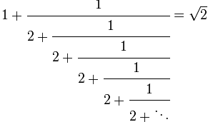
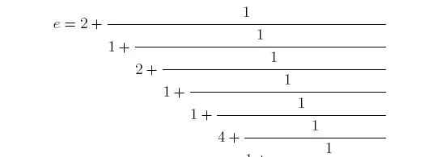
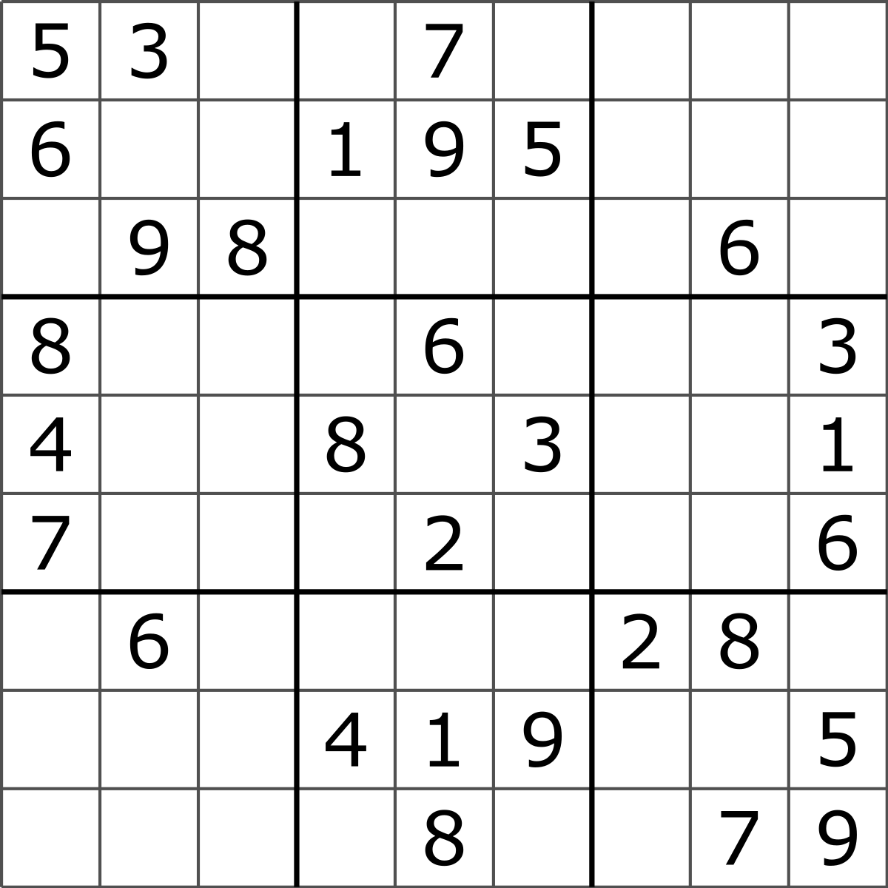

Back to the main page
Although solving each of these problems have been satisfying, there are a few problems that I took particular joy in
solving. For each of them I will briefly describe the problem and how I have gone about solving them without
going into too much detail in case the reader would like to tackle the problems themselves.
However if interested, you may see my solutions to some of these problems here!
The following is the list of some of my favorite problems from Project Euler

Lattice Paths is one problem that I was able to solve due to the math taught to me in the old version of
the Computer Sciences program at John Abbott. This problem is presented as follows; Starting from the top left corner of
a square grid, how many paths are there to take assuming you can only move right or downwards? Although it stumped me at first,
after some experimentation with smaller grids, I saw that the number of solutions would be equivalent to finding the
amount of combinations without repition (nCr).
Lexicographic permutations was a problem that stumped me for awhile, but I worked it out by hand. The
problem is asking for the 1 millionth lexicographic permutation of the digits 0-9, meaning the 1 millionth number that is
sorted numerically. For example the lexicographic permutations of the digits 0-2 are [012, 021, 102, 120, 201, 210],
and those would be considered numerically sorted. By seeing that the set can be sorted an n! amount of ways, you can
determine which digit it will start with and repeat the process until no digits are remaining in the set.

Square root convergents was a problem that had a surprisingly easy solution. The problem is asking to solve for first one thousand
continued fractions representing the square root of two, and with those fractions, how many of them contain a numerator that's
that has more digits than the denominator? Just by playing around with the values given for the first few iterations I was able to figure out
that I could always obtain the next set of values by using cross multiplication. The only thing to look out for is the precision of the values,
without enough precision it's easy to get the wrong values.

Similarly to problem #57, Convergents of e is another problem I was able to solve using cross multiplication. The only difference in this
problem is that they want the sum of digits of the numerator for the one hundredth convergent of e. Although I had the solution, I was
struggling to get the right answer, and to solve that issue I had to increase the number of decimals that my numbers were using in the calculations.
Another gentle reminder that it's important to be precise.
Square root digital expansion was a problem that was fun to work out, I really had to make sure I understood
how to calculate square roots by hand before coming up with an algorithm for it. The problem itself is asking for the
digit sum of the first one hundred digits of the irrational square roots from the numbers 1-100.

Su Doku was always something I was into doing when I was younger, so this problem really interested me from the
beginning. The problem itself is asking for the sum of the numbers in the top left corner in the solved puzzles for
one hundred given su doku grids. The idea of having a program that can solve any Su Doku puzzle was definitely appealing,
and it was fun to solve. Using recursion, I was able to figure out that the easiest solution was to make a backtracking
algorithm. If there's only one solution, then you'll always find the result eventually.
Back to the top